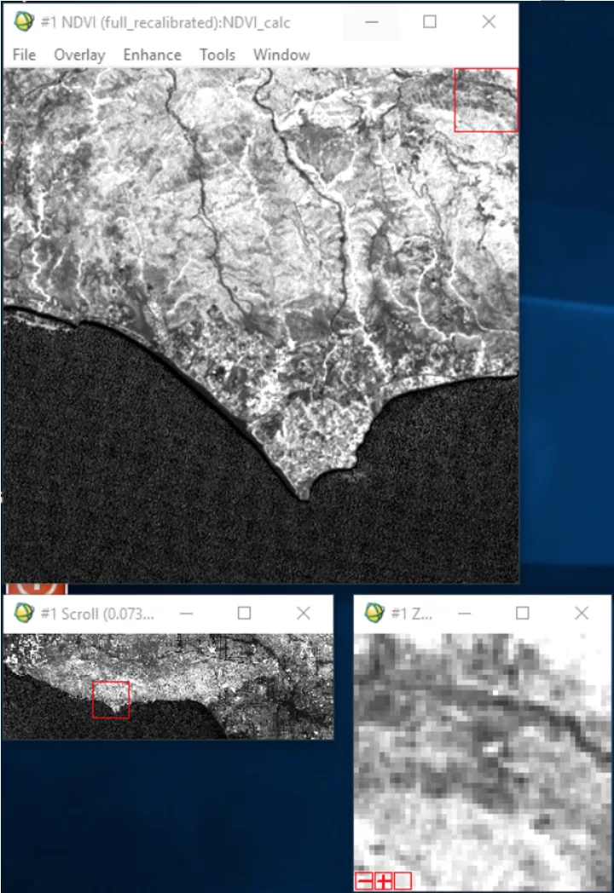
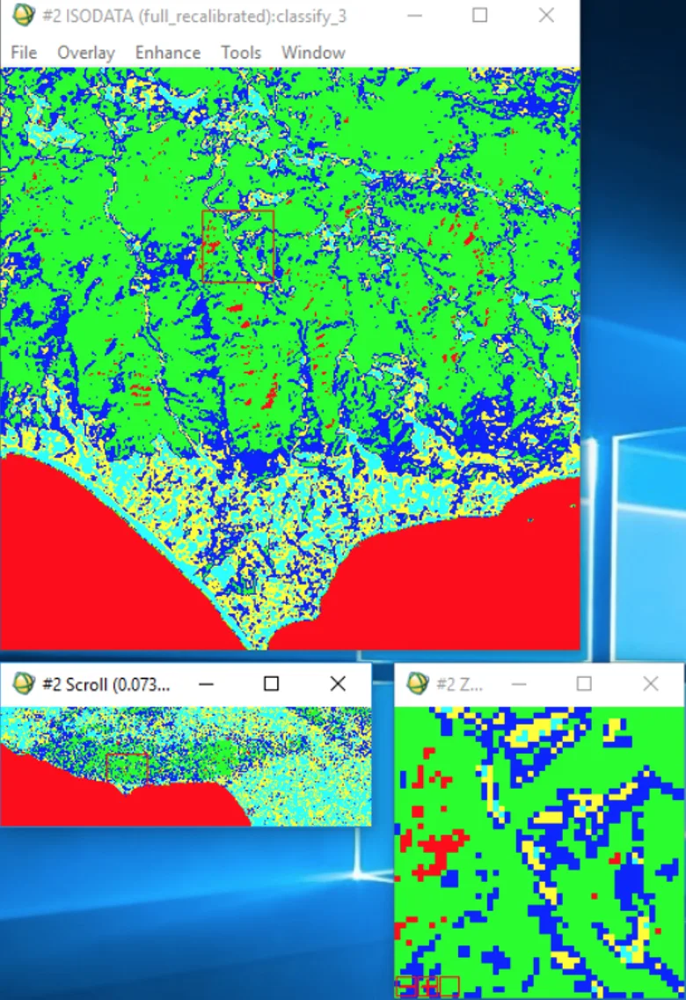
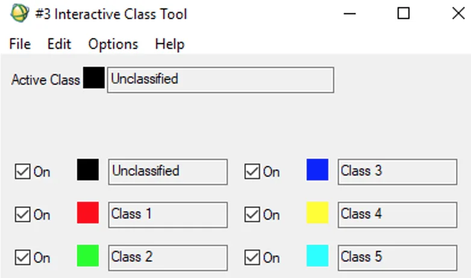
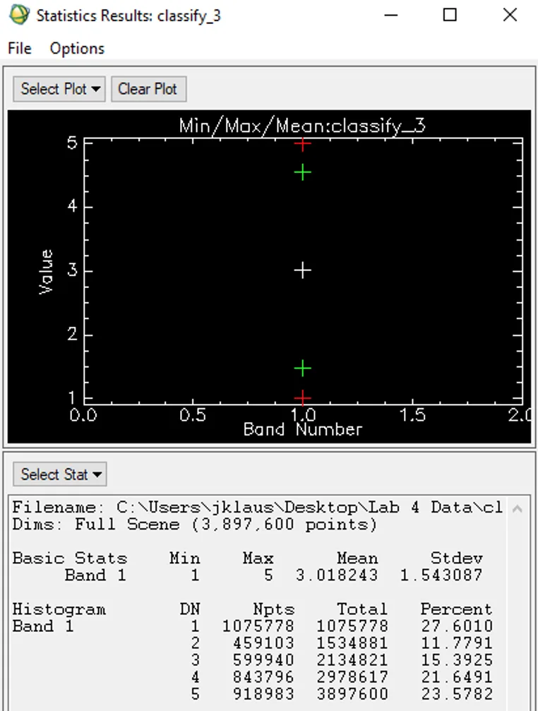
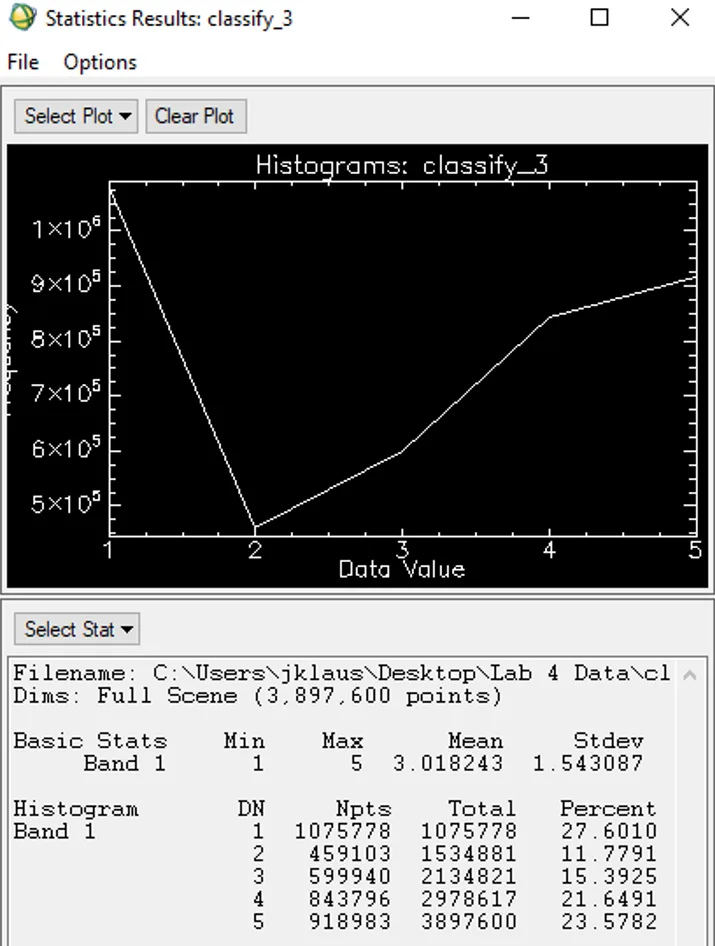

UCLA coursework, 2014 to 2018
Unsupervised Classification: Land Cover Types in Los Angeles, CA

This project highlights the importance of using an Unsupervised Classification when dealing with vegetation. In particular, performing and interpreting Unsupervised Classification of differing land cover types in Los Angeles through Landsat 7 images. Unsupervised Classification is computer automated, with the user dictating the number of Classes represented, as well as Maximum Iterations (how many times the algorithm runs) and the Change Threshold Percentage (when the algorithm stops for the next classification to emerge). These classes represent the number of pixels for each band represented in the image. Clustering algorithms group the pixels together based on spectral similarities. When the classification is finalized, coloring is added to the image. This makes interpreting the classification easier for the viewer.
Preparing the Images:
Landsat 7 images were subset, recalibrated, and stacked. Spatially subsetting the image allows for a specific portion to be analyzed at a more granular level. Landsat 7 images allow for the RGB combination (bands 4,3,2) to come to the forefront of our analysis. There is heavy emphasis on band 4 (red) in the Landsat image, as we will be taking a closer look at Vegetation Indices (NDVI). Recalibrating the image is crucial for minimizing the path radiance for particular bands. Statistic parameters are computed by running simple statistics on the original bands and subset bands. Each of these newly recalibrated bands are then 'stacked' together with the subset image bands into a single image.
NDVI Analysis

Understanding NDVI (Normalized Difference Vegetation Index) is paramount for properly interpreting an area's vegetation cover. NDVI is calculated by subtracting the Near-Infrared Band (NIR) with the Red Band, and then dividing that total with the value obtained from adding the NIR Band with the Red Band. Brighter pixel values in the image above correspond to higher rates of photosynthesis - in essence, the brighter the pixel equates to the greater amount of 'healthy' vegetation.
Isodata Algorithm

The computer automated Isodata Algorithm for Unsupervised Classification calculates class means evenly distributed in the data space. It then iteratively clusters the remaining pixels using minimum distance techniques. Each iteration recalculates the mean and reclassifies pixels with respect to the new means. This process continues until the number of pixels in each class changes by less than the selected pixel change threshold (or until the maximum number of iterations is reached).
Our stacked, subset image was set to the following parameters: - A minimum class value of 4 and maximum class value of 6. - Maximum number of iterations set to 6. - Threshold set to 5. - Minimum number of pixels per class set to 1,000. - Standard Deviation set to 1. - Minimum class distance set to 6. - Max number of merge pairs set to 2.
To understand what land cover feature each class represents, a classified image showcasing an array of colors is overlayed on top of the stacked image. Countless experiments of re-running the classification is performed until the best classification of the area is developed.

The Red in the image (Class 1) predominately illustrates bodies of water - lakes and oceans. The small portion of Red scattered among the Green denotes areas of extremely low net productivity.
The Green in the image (Class 2) showcases areas of extremely high vegetation. These are most likely wilderness areas and areas with high productivity such as the Santa Monica Mountains and those near Santa Clarita.
The Blue in the image (Class 3) represents lighter areas of vegetation - like small agricultural fields, or shrubs and bushes.
The Yellow in the image (Class 4) emblemizes the urban areas in Los Angeles - a city dominated with concrete. Things like buildings, roads, parking lots, etc.
The Light Blue (Class 5) illustrates varying areas of urban land cover. The color is distributed throughout the image in varying quantities, leading us to believe they're areas with buildings and relatively low regions of productivity.
Histogram & Statistics


Computing histograms and statistics is often the final part of the study, when the user is satisfied with the classification of the image. Histograms are efficient in showing the image's most dominant classes (its frequency). The Y-Axis indicates this frequency by showcasing the amount of time it occurs, while the X-Axis indicates the data values (classes). The statistics shed light on the number of pixels within each class. The 'DN' (Digital Number) column in the image above represents each alternating class. The 'Npts' column illustrates the total pixels in each category (pixels per class). General statistics, like the mean and standard deviation, are also computed. The 'Percent' column shows the percentage of space taken up by each category.